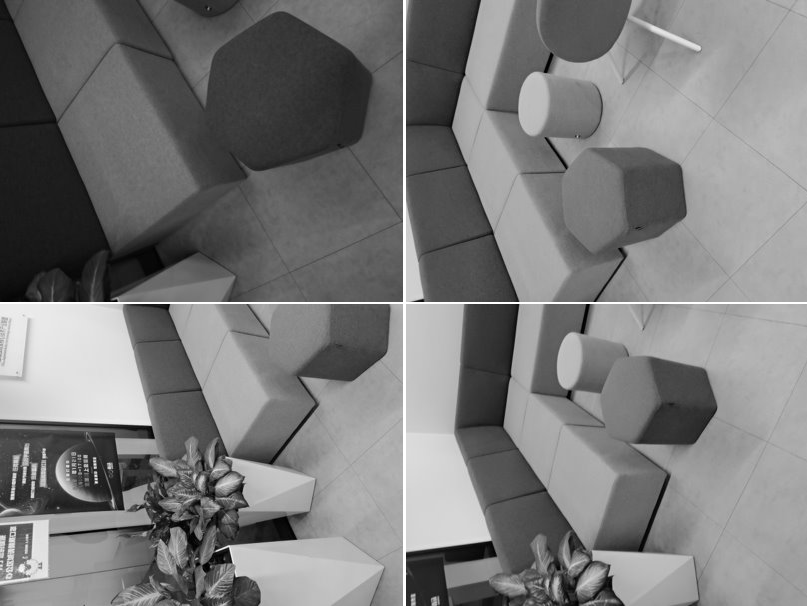
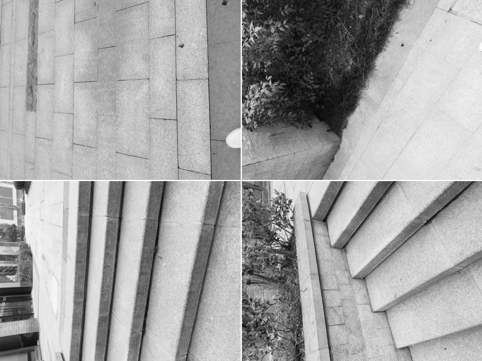

Sofa1
Source: sofa1.zip
GT model: model_sofa1.zip
GT CAD: cad_sofa1.obj

Sofa2:
Source: sofa2.zip
GT model: model_sofa2.zip
GT CAD: cad_sofa2.obj

Outdoor steps:
Source: outdoor_steps.zip
GT model: model_outdoor_steps.zip
GT CAD: cad_outdoor-steps.obj